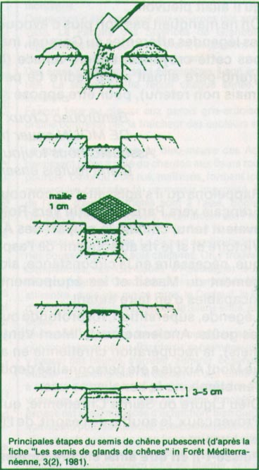

|
|
(Extrait de la Feuille de Chêne n°21)
Le chêne blanc est une espèce indigène bien adaptée aux conditions de la région. Sa croissance est lente surtout les dix premières années. En tant qu'espèce caducifoliée (à feuilles caduques), ses formations pures, et denses, résistent mieux aux incendies que les autres formations mélangées ou non.
* La récolte : on récolte les glands produits par les arbres qui se trouvent dans notre environnement immédiat. La récolte se fait principalement aux mois d'octobre et novembre par gaulage ; on peut aussi ramasser les glands tombés au sol, mais on doit préalablement faire un tri par flottaison (dans un seau par exemple). Ceux qui surnagent sont éliminés ; on n'utilise que ceux qui tombent au fond.
* La conservation : si on n'utilise pas les glands immédiatement (le jour même ou le lendemain), il convient de les conserver dans un endroit frais, à l'abris de la lumière et des prédateurs (souris, rats, mulots). L'idéal est un réfrigérateur (température entre 0°C et 5°C). Les glands sont alors mis dans un sac, mélangés avec des feuilles mortes de chêne blanc. La durée de conservation ne peut excéder 4 à 5 mois (d'octobre à février).
* Le semis : la période favorable est d'octobre à fin février. Il peut se faire de différentes manières. Dans les endroits découverts, il convient de les protéger si possible contre les prédateurs (rongeurs, oiseaux) ; soit par des grillages, soit par des abris-serres. On peut également faire du semis dit "à la volée", ce qui consiste à jeter les glands à la main. Mais ce type de semis doit se faire uniquement dans les broussailles sans aucune préparation du terrain (chêne Kermès, argelas). On peut s'assurer que les glands atteignent le sol en frappant les broussailles avec un bâton après les avoir jetés ; dans ce cas le germe ne doit pas être trop développé. Cette action vise à accélérer la dynamique naturelle des formations végétales, les geais et les mulots (notamment) qui consomment les glands font des provisions dans des caches. Ils en oublient un certain nombre, ce qui va permettre à des chênes de pousser ; et ainsi, de favoriser leur extension.
On ne connaît pas le taux de réussite pour ce genre d'opération, mais comme elle est facile à réaliser, on peut toujours l'essayer et faire un petit contrôle en comptant précisément le nombre de glands semés (multiple d'une dizaine par exemple). Il faut attendre le printemps suivant (mai-juin) pour voir les premières feuilles apparaître. On ne les voit dépasser des broussailles qu'après plusieurs années.
Il ne faut pas hésiter à mettre une grande quantité de glands par unité de surface (1 gland par m2 au minimum) : donc concentrer le semis. On peut faire un comptage des petits chênes (au printemps suivant, ou après plusieurs années). En ramenant ce nombre au nombre de glands semés, on obtient le taux de réussite.
Une canne
à semer les glands a été réalisée. Des
essais ont été mis en place, il faut donc attendre les résultats.
Bon
courage et patience à ceux qui se lanceront !